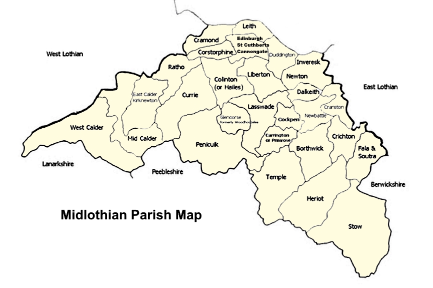

|
Veitch
Index > Geographic Index
> Midlothian

Veitch Lands that
Appear in Historical Records - by Parish
Dalkeith
Edinburgh
- Edinburgh
- St Cuthberts
- Cannongate
Leith
|
BIRTHS AND BAPTISMS
South Leith, Midlothian, Scotland
Johne Veitch and Issobell
27 Sep 1603 Johne Veitch married Issobell Ramsey (at South Leith)
10 Jan 1604 Johne Veitch
10 Jan 1604 Robert Veitch
24 Jun 1606 William Veich to Johne and Jonet
12 Nov 1620 Johne Veach to John and Elspit
27 Feb 1620 Patrik Veache to James and Janet
North Leith, Midlothian, Scotland
Alexander Veitch and Bessie
27 Sep 1625 James Veitch
17 Nov 1627 Issobell Veatch
Edinburgh Parish, Edinburgh, Midlothian, Scotland
Johnne Vaitche and _______
10 Aug 1597 Thomas Vaitche
20 Jul 1600 Katharine Vaitche
2 Jul 1601 Elizabeth Vatche
26 Dec 1602 Harie Vaitche
28 Mar 1604 James Vaitche
6 Jul 1606 Thomas Vaitche
Moungo Vaitche and Elspeth
1 Sept. 1602 Veitch Mungo, merchant married Elspeth Williamesoune
(Parish of Edinburgh)
children:
28 Sep 1603 Alexander Vaitche
28 Sep 1603 Marioun Vaitche
2 Jan 1606 Janet Vaitche
20 Nov 1608 Samuell Vaitch
5 Jul 1610 Marione Vaitch
4 Jul 1613 Alexander Vaitch
John Vaitch and Elspet
24 Dec 1612 George Vaitch
5 Jan 1615 Elspet Vaitch
22 Dec 1615 James Vaitch
Johne Vaitch and Jonet
1 Feb. 1616 Veitch John, younger, merchant married Janet Finlaysone
(Edinburgh Parish)
Children:
26 Jan 1617 Adame Vaitch
6 Aug 1619 Daniell Vaitch
Johnne Vaitch and Catherine
29 June 1620 Veitch John, younger, merchant married Catharine
Hope (Edinburgh Parish)
Children:
21 Mar 1622 Henrie Vaitch
22 Apr 1623 Catharine Vaitch
12 Jul 1625 Thomas Vaitch
Johne Vaitch and Jonnet
5 Jul 1631 Henrie Vaitch
7 Feb 1634 Bessie Vaitch
18 Sep 1635 James Vaitch
10 Oct 1637 Williame Vaitch
23 May 1639 George Vaitch
Henrie Vaitch and Geils
30 Jan 1628 Henrie Vaitch, writer married Geils Archebald (Parish
of Edinburgh)
children:
12 Nov 1628 Thomas Vaitch
25 Nov 1629 Johnne Vaitch
4 Aug 1612 Johne Vaitch to Alexander and Issobell
18 Nov 1628 James Vaitch born to Henrie and Helene
30 Jun 1633 Issobell Vaitch born to Thomas and Catharine
11 May 1636 Catharine Vaitch born to Thomas and Margaret
9 Mar 1637 Samuell Vaitch born to Catharine and _____
7 Jan 1640 Robert Vaitch born to Walter and Jeane
Saint Cuthberts, Edinburgh, Midlothian, Scotland
James Veitche and Issobell
17 Jan 1607 Adame Veitche
25 Jun 1609 James Veitche
12 May 1611 Margaret Veitche
11 Oct 1612 Jeane Veitche
Alexander Veitche and Issobell
18 Oct 1610 James Veitche
17 Oct 1611 Johne Veitche
William Veitche and Jeane
20 Aug 1626 Alexander Veitche
10 Nov 1633 James Veitche
21 Jun 1612 Thomas Veitche born to Patrik, and Margaret
16 Jun 1622 Margaret Veitche born to Mathow, and Bessie
5 Feb 1626 Jeane Veitche born to Mathow, and Jonet
Inveresk With Musselburgh, Midlothian Scotland
Annualrents out of the lands redeemed....David Veitch in Fisherrow,
his renunciation and grant of redemption of nine rigs of the
lands of Gilberstoun upon his receipt of 480 merks for the which
they were wadset, 3 June 1598 - Parliamentary Register, At
Edinburgh 9 April 1661 Legislation Act in favour of John Maitland,
earl of Lauderdale, his majesty's secretary, anent the making
up of his writs etc.
1616 Oct. 4 - Letters Testamentary at Edinburgh - David Veitch,
elder, in Fisherrow, burgess of Musselburgh (page 2, page 3)
1618 Thomson, Geillis, relict of Richard Calderwood, burgess
of Musselburgh, and last spouse to David Veitche, burgess thereof
_ 19 Apr
Johnne Vaitch and _____
9 Nov 1623 Cristiane Vaich
27 Feb 1625 Annas Vaitch
4 Oct 1626 Jeills Vaitch
13 Sep 1629 Janet Vaitch
24 Mar 1632 Jeills Vaitche ; baptized 28 Mar 1632
David Vaitche and _______
30 Mar 1623 Walter Vaitche
3 Apr 1625 Jeills Vaitch
20 Feb 1628 James Vaitch
23 May 1631 Margaret Vaitch ; baptized 29 May 1631
24 Mar 1634 Williame Vaitch ; baptized 30 Mar 1634
Andro Vaitch and__________
13 Apr 1625 George Vaitch
18 Nov 1627 Johnne Vaitch
29 Nov 1629 Bessie Vaitch
26 Jul 1636 Johnne Vaitch ; baptized 31 Jul 1636
17 Feb 1622 Jeills Vaitch born to Walter
9 Aug 1639 Walter Vaitch ; baptized 14 Aug 1639 born to James
and Marione
19 Feb. 1657. — [Court holden be Mr Johne Prestoun, James
Broun, Johne Makwraith, and Thomas Smith — Mr Johne Prestoun,
President.] Corapeired this day Johne Vaitche, and George Bamet,
induellares in the toun of Fisherraw, and in respect the said
Creorge hes beine wardet within the towbeith of Musselburgh certane
dayes, as the away taker of, at leist as haveing in his custodie,
thretteine peices of greene lether, which wes stoUenfrom Patrick
Cuthbertsone, tanner in the Cannongait, and the said George Bamet
being assoylied this day befor the Justice of Peace befoir written,
in respect it was proven be famous witnesses that he boght the
saids thretteine peices of lether in Fisherrow toun fjxmx two
Inglish souldieres, called Henrey Greene and John Donglas,* wha
ar now fled away from thair cullouris, nevertheless becaiis the
buissienes is l^omewhat scandalous, thairfor the said Johne Vaitch
becomes heirby baill -and surtie for the said George Barnet his
guid behavior, and that he sail keip the peace towards his Heighnes,
and all the people of the natioun, and sail not heirefter buy
or recept any unlawfuU goods, nor haunt or keip cornpanie with
any suspected persones, sua lang as he dwelles in Fisherraw,
under the paine of ane hunder punds Scotts, and the said George
Barnet obleisses him and his estait to releive the said Johne
Vaitche of his cautionarie abovewritten, as also the said George
becomes baill and surtie for Edward Barnet, his
brother, his gud cariage and behaviour in tyme comeing, and that
he sail betak himself to some lawfull trade and calling/* - History
of the Regality of Musselburgh : with numerous extracts from
the town records"
Lasswade, Midlothian, Scotland
7 Dec 1634 Patrik Vaitch born to James, and Margaret
11 Nov 1638 John Vaitch born to Thomas, and Bessie
Canongate, Edinburgh, Midlothian, Scotland
Marriage - Vaithe, Andrew, ane of Edinburgh, and Euphame Andersone,
m. Thursday, 18 Mar. 1647
Marriage - Veitch, Agnes, and John Milne, mar. in the Church
of Halyroodhouse, by Mr. James Kid, minister p. 27 June, Fryday,
13 Aug. 1669
Marriage - Veitch, James, in this congregation, and Jonet Munro
in Edinburgh, Sabbath, 21 May 1671
Marriage - Veitch, Sussanna, daughter lawfull to the deceast
Francis Veitch, ribban weiver in Leith, and Andrew Smith, cordiner,
burges, p. 26 May, m. 22 June 1693
James Veatche and Katherine
27 Jul 1615 James Veatche, tailor married Katharene Aitkine (at
Cannongate)
Children:
6 Oct 1616 Marione Veatche to James and Katharen
6 Sep 1618 Alexander Veatch to James and Katherin
20 May 1621 Agnas Veatche born to James, and Katreine
Mid Calder, Midlothian, Scotland
6 Mar 1626 Williame Veitche born to Alexander
|